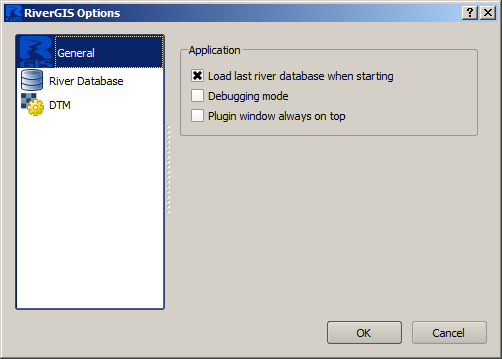
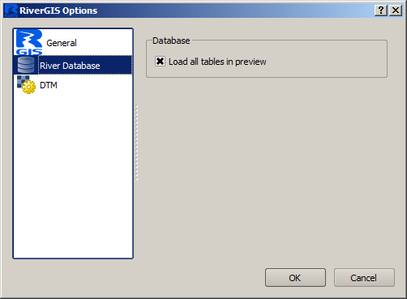
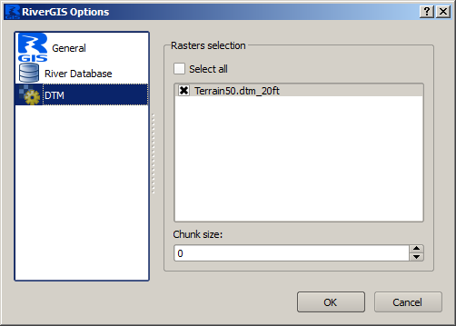

The Plugin Settings¶
Settings > Options |
The Options dialog allows users to set up the plugin parameters. Options are divided into several tabs described below.
General Options¶

- Load last database when starting
- If checked, RiverGIS loads the river database from previous session on start up.
- Debugging mode
- Turns on/off debugging mode making the plugin be more/less verbose.
- Plugin window always on top
- When checked, the plugin window is always visible.
Database Options¶

By default, all river database tables are loaded when Load River Database Tables into QGIS is choosen. When unchecked, RiverGIS will not load some temporary tables.
DTM Options¶

This tab alows users to choose rasters for probing (currently only elevation is probed from rasters).
Chunk size parameter decides how many points can be loaded at once to memory for DTM probing. Default value 0 allows the plugin to take all the points at once.